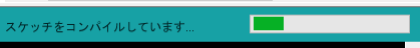
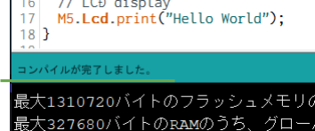
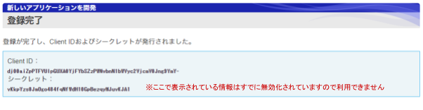

レシピ難易度：★★★☆☆
LCD付きプロトタイピング向けマイコンキット "M5Stack" にモバイルデータ通信機能を加える "3G 拡張モジュール" を組み合わせて、いつでもどこでも情報が得られる情報表示端末「インフォメーター」を作ります。表示する情報は「雨雲レーダー」の情報です。
本レシピは、動画コンテンツも用意しております。本レシピの動いている様子を、映像で確認できますので、ぜひ動画もご覧ください。
M5Stack と 3G 拡張ボード解説、開発環境の整備と "Hello World"、World Time API で時刻を表示
雨雲レーダーの表示、SORACOM Beam 活用
本レシピを行うのに必要な時間、概算費用
本レシピは以下の通りです。
- 必要な時間: 約2時間30分
- 概算費用: 約14,100円
※ 概算費用: ハードウェアや SORACOM を始めとした各種サービスの概ねの費用 (税や送料などの付帯費用や無料枠適用は考慮しないものとしています)
このコンテンツの進め方
ページの内容を読み、また作業を行ったら右下の［Next］を押して次のステップへ進みます。また、［Back］を使って戻ったり、左のナビゲーションメニューでもページの移動が可能です。
左上の［×］を押してコンテンツを終了することができます。また、ページを開きなおすことで再開できます。ページのアドレスはブラウザの［履歴］メニューを利用してください。
本レシピを行うためには以下のものをご用意ください。
ハードウェア
品名 | 数量 | 価格 | 購入先 | 備考 |
M5Stack Basic 3G 拡張ボード セット※1 | 1 | 12,800円 | M5Stack と M5Stack 用 3G 拡張ボードをそれぞれ準備いただいてもレシピを進めることができます。 M5Stack 用 3G 拡張ボードが対応している M5Stack は Basic と Gray の2モデルです。M5Stack FIRE は非対応ですのでご注意ください。 | |
対辺1.5mm 六角レンチ(ドライバー) | 1 | 410円 | M5Stack 用 3G 拡張ボードへ SIM を挿す際にボードの取り付け・取り外しに使用します。 | |
SORACOM 特定地域向け IoT SIM (plan-D / データ通信のみ / nanoSIM サイズ) | 1 | 852円 | サイズは nano をお求めください。「マルチカット」には nano サイズが含まれています。 |
※1 ※ 金額はレシピ作成時となります。ソラコムで販売している金額は税抜き・送料別です。
その他必要なもの
必要なもの | 費用 | 作成方法など |
SORACOM アカウント | 無料※ | |
Yahoo! JAPAN ID | 無料※ | |
開発用パソコン | ― |
|
※ アカウント作成・維持の費用の料金です。
M5Stack 用 3G 拡張ボード(以下、3G拡張ボード)には SIM スロットが備わっており、ここに SIM を入れることで 3G 通信が可能となります。 SIM の取り付け・取り外しは 3G拡張ボードをケースから取り外す必要があります。
3G拡張ボードをケースから取り外す
3G拡張ボードの四隅にあるネジを取り外します。ネジは紛失しないようにしてください。

SIM を取り付ける（取り外し方法含む）
SIM のサイズは nano です。取り付けはSIMをスロットに挿入したら「カチッ」と音が鳴るまで押し込みます。音が鳴ったら完了です。取り外しはSIMを奥まで押し込み「カチッ」と音が鳴ればSIMが出てきますので取り外しできます。

3G拡張ボードをケースに取り付ける
再度3G拡張ボードをケースに取り付けます。取り付け向きはピンが外側 (ケースから飛び出るように) します。逆向き (ピンがケースの内側を向いてしまっている) には取り付け内でください。
最後はネジで固定します。

重ねる
取り付け終わったら一番下から「BOTTOM」「3G拡張ボード」「Core※」と重ねていきます。
※ Core = M5Stack の LCD(モニター)やボタンがついているモジュール
以上で3G 拡張ボードへの SIM 取り付け作業は完了です。
Arduino IDE のセットアップ
Arduino IDE のインストールはArduino IDE セットアップ (Windows 編 / macOS 編) をご覧ください。約15～20分ほどかかります。
ESP32 用ボード定義のインストール
M5StackはマイコンにESP32を使用しています。Arduino IDEは標準ではESP32の開発環境が入っていませんが、環境設定から追加することができるため、その設定をおこないます。
Arduino IDEのメニューから環境設定を開きます。
- Windows の場合: ［ファイル］>［環境設定］
- macOS の場合: ［Arduino］>［Preferences...］

追加のボードマネージャのURL の  をクリックします
をクリックします

※ 画面は macOS ですが、Windows も同様です。
ボード定義の URL を入力します
テキストボックスに以下の URL を入力します。
https://dl.espressif.com/dl/package_esp32_index.json

入力したら［OK］をクリックします。
OK をクリックします
環境設定のウィンドウに戻ってきたら［OK］をクリックします。

［ツール］>［ボード: ...］>［ボードマネージャ...］をクリックします
※ 画面は macOS ですが、Windows も同様です。
"esp32" をインストールする
ボードマネージャの一覧から esp32 (by Espressif Systems) を選んで［インストール］をクリックします。
バージョンはインストール時における最新バージョンを選んでください。
※ 約37MBのダウンロードが発生します。

インストールが終了したら［閉じる］をクリックします。
以上で、ESP32 用ボード定義のインストールは完了です。
M5Stack 用ライブラリのインストール
M5Stack用のライブラリをインストールします。
［スケッチ］>［ライブラリをインクルード］>［ライブラリを管理...］をクリックします

※ 画面は macOS ですが、Windows も同様です。
"M5Stack" をインストールする
ライブラリマネージャの一覧から M5Stack (by M5Stack) を選んで［インストール］をクリックします。
バージョンはインストール時における最新バージョンを選んでください。
※ 約6MBのダウンロードが発生します。
インストールが終了したら［閉じる］をクリックします。
※ 画面上は "OK" となっていますが、インストールが完了すると "閉じる" になります。
仮想シリアルポートドライバのインストール
M5Stack へのプログラム書込みや、M5Stack の出力のモニタリングは仮想的なシリアルポートを通じて行います。
M5Stack 公式サイトのダウンロードページの CP2104 Driver をお使いのOSに合わせてダウンロードします。

インストール: Windows の場合
ZIP ファイルを展開し、中の CP210xVCPInstaller_x64_v6.7.0.0.exe をダブルクリックして実行し、表示されるダイアログにしたがってインストールを完了してください。
インストール: macOS の場合
ZIP ファイルを展開し、中の SiLabsUSBDriverDisk.dmg をダブルクリックします。その後表示される Silicon Labs VCP Driver.pkg をダブルクリックして、表示されるダイアログにしたがってインストールを完了してください。
ここまでで M5Stack の開発環境の準備は完了です。
ここまでのセットアップが正常にできているか、実際にサンプルのプログラム (スケッチと呼ばれる) をコンパイルしてみます。
ここでは M5Stack 実機はまだ使用しません。
ボード定義を "M5Stack-Core-EPS32" に変更する
［ツール］>［ボード: ...］>［M5Stack-Core-ESP32］をクリックします。
※ 画面は Windows ですが macOS も同様です。
サンプルスケッチ "HelloWorld" を開く
［ファイル］>［スケッチ例］>［M5Stack］>［Basics］>［HelloWorld］をクリックします。
コンパイルをする
新しく開いたウィンドウで ボタンをクリックします。スケッチのコンパイルが始まります。
ボタンをクリックします。スケッチのコンパイルが始まります。
ウィンドウの下部で進行状況が確認できます。

進行状況の部分にコンパイルが完了しました。と表示されれば、開発環境は正しくセットアップできています。

エラー発生時の対処
コンパイル時にエラーが発生すると以下のように表示されます。
ここまでのセットアップで不備が無かったか、再度確認してください。

※ エラーメッセージは一例です。他にも複数のパターンがあります。
いよいよ M5Stack 本体でスケッチを実行します。
M5Stack をパソコンにつなげる
M5Stack 本体と USB ケーブルを用意して接続してください。
この時 M5Stack の電源が自動的に ON になる場合もありますが特に問題ありません。
サンプルスケッチ "HelloWorld" を開く
［ファイル］>［スケッチ例］>［M5Stack］>［Basics］>［HelloWorld］をクリックします。
マイコンボードに書き込む
"HelloWorld" を表示しているウィンドウでボタンをクリックします。スケッチのコンパイルと、スケッチの書き込みが始まります。
ボードへの書き込みが完了しました。と表示されたら正常終了です。

エラーが発生した場合
そのポートは存在しないか、ボードが接続されていません | 複数のシリアルポートが存在する場合に表示されることがあります。 M5Stack が接続されているシリアルポートを指定するようにしてください。(シリアルポートをいくつか試してみるのも一つの方法です。特に破損するようなことはありません) シリアルポートは［ツール］>［シリアルポート: ...］で変更できます。
※ この例では M5Stack は COM12 として認識されているため COM12 への変更が必要。 macOS の場合は |
Failed to connect to ESP32 | 何らかの理由で M5Stack が認識されなかった可能で氏があります。 M5Stack の USB ケーブルを挿し直してみてください。 |

実行の様子
書き込みが完了すると M5Stack の電源が自動的に入り直し(リセット)され、中のスケッチが実行されます。
M5Stack の画面に HelloWorld と表示されれば成功です。
その他のサンプルスケッチを実行してみる
［ファイル］>［スケッチ例］>［M5Stack］>［Basics］>［Display］では以下のように表示されます。

3G 拡張ボードを使って SORACOM Air によるセルラー通信を行い、3G 拡張ボードの動作確認を行います。
セルラー通信ライブラリのインストール
3G 拡張ボードで利用できる通信ライブラリをインストールします。今回は TinyGSM というオープンソースライブラリを利用して、世界時計を M5Stack で表示してみます。
［スケッチ］>［ライブラリをインクルード］>［ライブラリを管理...］をクリックします
※ 画面は macOS ですが、Windows も同様です。
"TinyGSM" をインストールする
ライブラリマネージャの一覧から TinyGSM (by Volodymyr Shymanskyy) を選んで［インストール］をクリックします。
バージョンはインストール時における最新バージョンを選んでください。
インストールが終了したら［閉じる］をクリックします。
World Time API を取得して表示するスケッチ
動作テストを兼ねて世界時計を API で提供している World Time API から日時を取得して表示します。
Arduino IDE を起動し［ファイル］>［新規ファイル］を開くと void setup() { から始まる「空のスケッチ」が表示されます。
一度スケッチの内容を削除してから、後述のスケッチで置き換えてください。
m5stack_3gextboard_worldclock.ino
/*
* Copyright (c) 2019 Kohei "Max" MATSUSHITA
* Released under the MIT license
* https://opensource.org/licenses/mit-license.php
*/
#include <M5Stack.h>
#define TINY_GSM_MODEM_UBLOX
#include <TinyGsmClient.h>
TinyGsm modem(Serial2); /* 3G board modem */
TinyGsmClient ctx(modem);
void setup() {
Serial.begin(115200);
M5.begin();
M5.Lcd.clear(BLACK);
M5.Lcd.setTextColor(WHITE);
M5.Lcd.println(F("M5Stack + 3G Module"));
M5.Lcd.print(F("modem.restart()"));
Serial2.begin(115200, SERIAL_8N1, 16, 17);
modem.restart();
M5.Lcd.println(F("done"));
M5.Lcd.print(F("getModemInfo:"));
String modemInfo = modem.getModemInfo();
M5.Lcd.println(modemInfo);
M5.Lcd.print(F("waitForNetwork()"));
while (!modem.waitForNetwork()) M5.Lcd.print(".");
M5.Lcd.println(F("Ok"));
M5.Lcd.print(F("gprsConnect(soracom.io)"));
modem.gprsConnect("soracom.io", "sora", "sora");
M5.Lcd.println(F("done"));
M5.Lcd.print(F("isNetworkConnected()"));
while (!modem.isNetworkConnected()) M5.Lcd.print(".");
M5.Lcd.println(F("Ok"));
M5.Lcd.print(F("My IP addr: "));
IPAddress ipaddr = modem.localIP();
M5.Lcd.print(ipaddr);
delay(2000);
}
void loop() {
M5.update();
M5.Lcd.clear(BLACK);
M5.Lcd.setCursor(0, 0);
M5.Lcd.println(F("World Clock from worldtimeapi.org"));
/* HTTP GET example */
if (!ctx.connect("worldtimeapi.org", 80)) {
Serial.println(F("Connect failed."));
return;
}
Serial.println(F("connected."));
/* send request */
ctx.println("GET /api/timezone/Asia/Tokyo.txt HTTP/1.0");
ctx.println("Host: worldtimeapi.org");
ctx.println();
Serial.println("sent.");
/* receive response */
while (ctx.connected()) {
String line = ctx.readStringUntil('\n');
Serial.println(line);
if (line == "\r") {
Serial.println("headers received.");
break;
}
}
char buf[1 * 1024] = {0};
ctx.readBytes(buf, sizeof(buf)); /* body */
ctx.stop();
M5.Lcd.println(buf);
delay(1000 * 10);
}マイコンボードに書き込む
Arduino IDE でボタンをクリックします。ボードへの書き込みが完了しました。と表示されたら正常終了です。
実行の様子
最初にモデムの型番や IP アドレスを表示した後に World Time API から取得したデータを表示します。

うまく動作しなかった場合
症状 | 考えられる原因 | 対策 |
| 3G 拡張ボードで内部エラーが発生している可能性がある | カスタマーサポートへご連絡ください。 |
| SIM が取り付けられていない。(もしくは SORACOM IoT SIM ではない) | SORACOM 特定地域向け IoT SIM plan-D を取り付けてください。 |
電波が圏外もしくは微弱である可能性がある | 窓際等、通信条件が良い環境でお試しください。 | |
SIM が SORACOM に登録されていない ※ SORACOM ユーザーコンソールで確認できます ( "登録されてない" 事が確認できます) | 発注済みの SIM を登録する もしくは 通販サイトやイベント等で入手した SIM を登録する を行ってください。 | |
SIM の「状態」が "準備完了" となっている（ "使用中" でない） ※ SORACOM ユーザーコンソールで確認できます | 当該 SIM のチェックボックスをチェックしてから［操作］>［使用開始］をクリックして "使用中" に変更してください。 |
以上で M5Stack の開発環境から M5Stack 本体と 3G 拡張ボードの動作確認が完了しました。
雨雲レーダーの情報は Yahoo! デベロッパーネットワーク (YOLP) を利用します。YOLPに「アプリケーション登録」すると、Web API で利用できる情報が入手できます。
YOLP アプリケーションの管理を開き［新しいアプリケーションを開発］をクリックします
アプリケーション情報の入力で以下のように入力します
アプリケーションの種類 | サーバーサイド（Yahoo! ID連携 v2） |
アプリケーション名 |
※ 任意のアプリケーション名で構いません |
サイトURL | (ご自分のブログや会社のURLを記入ください) |
※ アプリケーションの説明、利用するスコープは編集の必要はありません。
ガイドラインに同意しますか？を［同意する］にチェックをしてから［確認］をクリックします。
入力内容の確認で内容を確認したら［登録］をクリックします。登録が完了すると Client ID とシークレットが入手できます。この2つの情報をメモしたうえで漏洩しないようにしてください。
ブラウザでテストする
先ほど入手した Client ID を使って、まずはブラウザで雨雲レーダーの画像を表示してみます。以下のURLをブラウザのアドレスバーに入力してください。
その際、 <YOUR_CLIENT_ID> を先ほど入手した Client ID に置き換えてください。
https://map.yahooapis.jp/map/V1/static?appid=<YOUR_CLIENT_ID>&output=jpg&quality=50&width=320&height=208&overlay=type:rainfall%7Cdatelabel:off&mode=map&style=base:simple&z=8&lat=35.6313456&lon=139.7312189以下のようにブラウザに地図が表示されれば成功です。(表示したときの雨雲の状況によって水色の掛かり具合は異なります)
YOLP から取得した雨雲レーダーの画像を M5Stack で表示します。
Arduino IDE を起動し［ファイル］>［新規ファイル］を開き、以下のスケッチを貼り付けます。
M5Stack から YOLP のURL を直接アクセスするため、スケッチ内の103行目の <YOUR_CLIENT_ID> を Client ID で置き換えるようにしてください。
m5stack_rainradar.ino
/*
* Copyright (c) 2019 Kohei "Max" MATSUSHITA
* Released under the MIT license
* https://opensource.org/licenses/mit-license.php
*/
#include <M5Stack.h>
#define CONSOLE Serial
#define MODEM Serial2 /* Serial2 is Modem of 3G Module */
#include <string.h>
#define TINY_GSM_MODEM_UBLOX
#include <TinyGsmClient.h>
TinyGsm modem(MODEM);
TinyGsmClientSecure ctx(modem);
void modem_enabler();
void render_rain_radar();
void print_top();
void print_bottom();
uint16_t getColor(uint8_t red, uint8_t green, uint8_t blue);
void setup() {
M5.begin();
CONSOLE.begin(115200);
M5.Lcd.clear(BLACK);
M5.Lcd.setTextSize(2);
print_top();
print_bottom();
M5.Lcd.setTextColor(WHITE);
M5.Lcd.setCursor(0, 16);
M5.Lcd.println("## Congrats,");
M5.Lcd.println("## Boot successfuly!");
}
void loop() {
if (M5.BtnA.wasReleased()) {
M5.Lcd.setTextColor(WHITE);
M5.Lcd.setCursor(218, 0);
M5.Lcd.print(F("(prog..."));
modem_enabler();
get_and_render_rain_radar();
print_top();
print_bottom();
modem.gprsDisconnect();
}
M5.update();
}
/* ------------------------------------------------------------*/
void modem_enabler() {
M5.Lcd.setTextColor(WHITE);
MODEM.begin(115200, SERIAL_8N1, 16, 17);
M5.Lcd.fillRect(0, 224, 320, 16, BLACK); /* clean up */
M5.Lcd.setCursor(0, 224);
M5.Lcd.println(F("modem.restart()"));
CONSOLE.println(F("modem.restart()"));
modem.restart();
M5.Lcd.fillRect(0, 224, 320, 16, BLACK); /* clean up */
M5.Lcd.setCursor(0, 224);
M5.Lcd.println(F("waitForNetwork()"));
CONSOLE.println(F("waitForNetwork()"));
while (!modem.waitForNetwork()) M5.Lcd.print(".");
M5.Lcd.fillRect(0, 224, 320, 16, BLACK); /* clean up */
M5.Lcd.setCursor(0, 224);
M5.Lcd.println(F("gprsConnect(soracom.io)"));
CONSOLE.println(F("gprsConnect(soracom.io)"));
modem.gprsConnect("soracom.io", "sora", "sora");
M5.Lcd.fillRect(0, 224, 320, 16, BLACK); /* clean up */
M5.Lcd.setCursor(0, 224);
M5.Lcd.println(F("isNetworkConnected()"));
CONSOLE.println(F("isNetworkConnected()"));
while (!modem.isNetworkConnected()) M5.Lcd.print(".");
M5.Lcd.fillRect(0, 224, 320, 16, BLACK); /* clean up */
M5.Lcd.setCursor(0, 224);
M5.Lcd.print(F("MyIP:"));
CONSOLE.print(F("MyIP: "));
IPAddress ipaddr = modem.localIP();
M5.Lcd.println(ipaddr);
CONSOLE.println(ipaddr);
}
char _buf[32*1024] = {0}; /* store for JPG image data */
void get_and_render_rain_radar() {
/* connect to host */
const char *host = "map.yahooapis.jp";
const int port = 443;
int timeout_s = 60;
CONSOLE.print("Connecting:");
CONSOLE.println(host);
if (!ctx.connect(host, port, timeout_s)) {
CONSOLE.println("fail");
return;
}
/* send request */
const char *path = "GET /map/V1/static?appid=<YOUR_CLIENT_ID>&output=jpg&quality=50&width=320&height=208&overlay=type:rainfall%7Cdatelabel:off&mode=map&style=base:simple&z=8&lat=35.6313456&lon=139.7312189 HTTP/1.0";
CONSOLE.println(path);
ctx.println(path);
ctx.print("Host: ");
ctx.println(host);
ctx.println();
Serial.println("sent.");
/* receive response */
while (ctx.connected()) {
String line = ctx.readStringUntil('\n');
CONSOLE.println(line);
if (line == "\r") {
CONSOLE.println("headers received.");
break;
}
}
ctx.readBytes(_buf, sizeof(_buf)); /* body */
ctx.stop();
/* rendering */
size_t _buf_s = strlen(_buf);
CONSOLE.println(_buf_s);
CONSOLE.println(_buf);
M5.Lcd.drawJpg((const unsigned char *)_buf, _buf_s, 0, 16);
_buf[0] = '\0'; /* cleanup */
CONSOLE.println("done.");
}
void print_top() {
M5.Lcd.fillRect(0, 0, 320, 16, getColor(51, 244, 204));
M5.Lcd.setTextColor(BLACK);
M5.Lcd.setCursor(0, 0);
M5.Lcd.print(F("RainRadar by YOLP"));
}
void print_bottom() {
M5.Lcd.fillRect(0, 224, 320, 16, BLACK); /* clean up */
M5.Lcd.setTextColor(WHITE);
M5.Lcd.setCursor(0, 224);
M5.Lcd.print(F("Btn => Retreve RainRadar"));
}
uint16_t getColor(uint8_t red, uint8_t green, uint8_t blue) {
return ((red>>3)<<11) | ((green>>2)<<5) | (blue>>3);
}実際の動作
このスケッチは M5Stack の一番左のボタンを押したときに 3G 接続～雨雲レーダー画像の取得までを行います。(押下毎に接続から取得までを行います)
ここまでで M5Stack とクラウドサービス(API)をセルラー通信で連携できるようになりました。直接アクセスする場合は Client ID をプログラム(URL)の中に埋め込むことを行いました。
この場合 Client ID を再発行したり、URL に基づいたパラメータの変更を行うためには毎度プログラムを書き換える必要があり、書き換え環境が無ければ何もできなくなります。
この手間を軽減するのが SORACOM Beam / SORACOM Funnel / SORACOM Funk といった SORACOM のサービスです。Client ID やアクセス先の URL をプログラムに埋め込むのではなく、「設定情報」としてSORACOM に保管します。そして SIM が持つ固有の情報で設定情報の引き出しを行い、その情報に基づいて URLやサービスへのアクセスを中継する仕組みです。
ここからは直接アクセス方法から SORACOM Beam を中継する方法へ切り替えていきます。
SORACOM Beam では http://beam.soracom.io/rainradar へのアクセスを YOLP へのアクセスとして中継する設定とします。
まずはグループの作成と、作成したグループへ SIM を所属させる事から始めます。
SORACOM ユーザーコンソールにログインした後［Menu］>［SIM 管理］とクリックして SIM 管理画面を開きます。

M5Stack に取り付けた SIM にチェックを付け、［操作］>［所属グループ変更］とクリックします。

「新しい所属グループ」のプルダウンボックスをクリックした後、［新しいグループを作成...］をクリックします。

「グループ作成」のグループ名を入力して［グループ作成］をクリックします。
項目 | 例 | 備考 |
グループ名 |
| 自由に入力可能です。日本語も設定可能です。 |
新しい所属グループが先ほど作成したグループになっていることを確認したら［グループ変更］をクリックします。
自動的に SIM 管理画面に戻ります。
SIM の「グループ」に先ほど作ったグループが設定されていることを確認してください。
以上で、グループの作成と所属の作業は完了です。
SIM 管理画面から、先ほど割り当てたグループ名をクリックします。
［SORACOM Beam 設定］をクリックして設定ができるように開きます。
SORACOM Beam 設定のをクリックして表示されたメニューの中から HTTP エントリーポイントをクリックします。
「SORACOM Beam - HTTP 設定」では以下のように入力します。
エントリポイント | パス |
|
転送先 | プロトコル | HTTPS |
ホスト名 |
| |
ポート番号 | (なにも入力しません) | |
パス |
※ | |
ヘッダ操作 | (変更する場所はありません) | |
パス
/map/V1/static?appid=<YOUR_CLIENT_ID>&output=jpg&quality=50&width=320&height=208&overlay=type:rainfall%7Cdatelabel:off&mode=map&style=base:simple&z=8&lat=35.6313456&lon=139.7312189入力したら［保存］をクリックします。SORACOM Beam の設定に、今設定した内容が表示されていることを確認します。
YOLP から取得した雨雲レーダーの画像を SORACOM Beam を中継して取得し、 M5Stack で表示します。
Arduino IDE を起動し［ファイル］>［新規ファイル］を開き、以下のスケッチを貼り付けます。
貼り付ける際、スケッチの編集は不要です。
m5stack_rainradar_with_soracom_beam.ino
/*
* Copyright (c) 2019 Kohei "Max" MATSUSHITA
* Released under the MIT license
* https://opensource.org/licenses/mit-license.php
*/
#include <M5Stack.h>
#define CONSOLE Serial
#define MODEM Serial2 /* Serial2 is Modem of 3G Module */
#include <string.h>
#define TINY_GSM_MODEM_UBLOX
#include <TinyGsmClient.h>
TinyGsm modem(MODEM);
TinyGsmClient ctx(modem);
void modem_enabler();
void render_rain_radar();
void print_top();
void print_bottom();
uint16_t getColor(uint8_t red, uint8_t green, uint8_t blue);
void setup() {
M5.begin();
CONSOLE.begin(115200);
M5.Lcd.clear(BLACK);
M5.Lcd.setTextSize(2);
print_top();
print_bottom();
M5.Lcd.setTextColor(WHITE);
M5.Lcd.setCursor(0, 16);
M5.Lcd.println("## Congrats,");
M5.Lcd.println("## Boot successfully!");
}
void loop() {
if (M5.BtnA.wasReleased()) {
M5.Lcd.setTextColor(WHITE);
M5.Lcd.setCursor(218, 0);
M5.Lcd.print(F("(prog..."));
modem_enabler();
get_and_render_rain_radar();
print_top();
print_bottom();
modem.gprsDisconnect();
}
M5.update();
}
/* ------------------------------------------------------------*/
void modem_enabler() {
M5.Lcd.setTextColor(WHITE);
MODEM.begin(115200, SERIAL_8N1, 16, 17);
M5.Lcd.fillRect(0, 224, 320, 16, BLACK); /* clean up */
M5.Lcd.setCursor(0, 224);
M5.Lcd.println(F("modem.restart()"));
CONSOLE.println(F("modem.restart()"));
modem.restart();
M5.Lcd.fillRect(0, 224, 320, 16, BLACK); /* clean up */
M5.Lcd.setCursor(0, 224);
M5.Lcd.println(F("waitForNetwork()"));
CONSOLE.println(F("waitForNetwork()"));
while (!modem.waitForNetwork()) M5.Lcd.print(".");
M5.Lcd.fillRect(0, 224, 320, 16, BLACK); /* clean up */
M5.Lcd.setCursor(0, 224);
M5.Lcd.println(F("gprsConnect(soracom.io)"));
CONSOLE.println(F("gprsConnect(soracom.io)"));
modem.gprsConnect("soracom.io", "sora", "sora");
M5.Lcd.fillRect(0, 224, 320, 16, BLACK); /* clean up */
M5.Lcd.setCursor(0, 224);
M5.Lcd.println(F("isNetworkConnected()"));
CONSOLE.println(F("isNetworkConnected()"));
while (!modem.isNetworkConnected()) M5.Lcd.print(".");
M5.Lcd.fillRect(0, 224, 320, 16, BLACK); /* clean up */
M5.Lcd.setCursor(0, 224);
M5.Lcd.print(F("MyIP:"));
CONSOLE.print(F("MyIP: "));
IPAddress ipaddr = modem.localIP();
M5.Lcd.println(ipaddr);
CONSOLE.println(ipaddr);
}
char _buf[32*1024] = {0}; /* store for JPG image data */
void get_and_render_rain_radar() {
/* connect to host */
const char *host = "beam.soracom.io";
const int port = 8888;
int timeout_s = 60;
CONSOLE.print("Connecting:");
CONSOLE.println(host);
if (!ctx.connect(host, port, timeout_s)) {
CONSOLE.println("fail");
return;
}
/* send request */
const char *path = "GET /rainradar HTTP/1.0";
CONSOLE.println(path);
ctx.println(path);
ctx.print("Host: ");
ctx.println(host);
ctx.println();
Serial.println("sent.");
/* receive response */
while (ctx.connected()) {
String line = ctx.readStringUntil('\n');
CONSOLE.println(line);
if (line == "\r") {
CONSOLE.println("headers received.");
break;
}
}
ctx.readBytes(_buf, sizeof(_buf)); /* body */
ctx.stop();
/* rendering */
size_t _buf_s = strlen(_buf);
CONSOLE.println(_buf_s);
CONSOLE.println(_buf);
M5.Lcd.drawJpg((const unsigned char *)_buf, _buf_s, 0, 16);
_buf[0] = '\0'; /* cleanup */
CONSOLE.println("done.");
}
void print_top() {
M5.Lcd.fillRect(0, 0, 320, 16, getColor(51, 244, 204));
M5.Lcd.setTextColor(BLACK);
M5.Lcd.setCursor(0, 0);
M5.Lcd.print(F("RainRadar by YOLP"));
}
void print_bottom() {
M5.Lcd.fillRect(0, 224, 320, 16, BLACK); /* clean up */
M5.Lcd.setTextColor(WHITE);
M5.Lcd.setCursor(0, 224);
M5.Lcd.print(F("Btn => Retreve RainRadar"));
}
uint16_t getColor(uint8_t red, uint8_t green, uint8_t blue) {
return ((red>>3)<<11) | ((green>>2)<<5) | (blue>>3);
}実際の動作
動作自体は直接アクセス版と同じとなります。M5Stack の一番左のボタンを押したときに 3G 接続～雨雲レーダー画像の取得までを行います。(押下毎に接続から取得までを行います)
直接アクセス版との差分
- TLS (暗号化処理) が不要となった
- 接続先ホストが
map.yahooapis.jpからbeam.soracom.ioへ変更となった - 接続先パスが
/map/V1/static?.....から/rainradarへ変更となった
--- m5stack_rainradar.ino 2019-08-21 08:43:01.819963700 +0900
+++ m5stack_rainradar_with_soracom_beam.ino 2019-08-21 08:42:25.247913200 +0900
@@ -11,7 +11,7 @@
#define TINY_GSM_MODEM_UBLOX
#include <TinyGsmClient.h>
TinyGsm modem(MODEM);
-TinyGsmClientSecure ctx(modem);
+TinyGsmClient ctx(modem);
void modem_enabler();
void render_rain_radar();
@@ -89,8 +89,8 @@
char _buf[32*1024] = {0}; /* store for JPG image data */
void get_and_render_rain_radar() {
/* connect to host */
- const char *host = "map.yahooapis.jp";
- const int port = 443;
+ const char *host = "beam.soracom.io";
+ const int port = 8888;
int timeout_s = 60;
CONSOLE.print("Connecting:");
CONSOLE.println(host);
@@ -100,7 +100,7 @@
}
/* send request */
- const char *path = "GET /map/V1/static?appid=<YOUR_CLIENT_ID>&output=jpg&quality=50&width=320&height=208&overlay=type:rainfall%7Cdatelabel:off&mode=map&style=base:simple&z=8&lat=35.6313456&lon=139.7312189 HTTP/1.0";
+ const char *path = "GET /rainradar HTTP/1.0";
CONSOLE.println(path);
ctx.println(path);
ctx.print("Host: ");URL を変更してみる
アクセス先 URL は SORACOM Beam に設定という形で保管されるようになったため、 URL 内のパラメータの変更は M5Stack の書き換えが不要となったことを確認してみます。
ここでは表示位置の経度を表す lon パラメータの値を東京近辺(東経139.xx度)から京都周辺(東経135.xx度)に変更し、M5Stack のボタンを押して画像の再取得を行っています。
このようにスケッチの書き換えが不要になったことが確認できました。
本レシピでは費用がかかるサービスを利用しています。
本項をよく読み、必要な操作や解除作業を行うようにして、想定外の費用が掛からないようにしてください。
費用について
ここで記載している金額は全て税別、送料別となります。
SORACOM プラットフォームの利用料金
サービス／機能 | 料金 |
基本料: 10円/日 通信料: 0.2円~/MB (今回の利用であれば 1MB 以内で収まる範囲) | |
0.0018円/リクエスト |
※ 費用詳細はリンク先をご確認ください。
グループ解除
SORACOM Beam はリクエスト発生時毎の従量課金となっているため、作成したグループ内の設定が SORACOM Beam のみであれば、存在し続けることによる費用の発生はありませんが、後日利用の目途がない場合は早々にグループからの解除をお勧めいたします。
グループ解除の方法はグループからの解除 (JP)をご覧ください。
本レシピでは、M5Stack と 3G 拡張ボードを組み合わせた「情報表示端末」を作りました。M5Stack は文字だけでなく画像表示も可能であるため、表現力は非常に高いデバイスと言えます。
元々 M5Stack が採用している ESP32 というマイコンは Wi-Fi 通信機能が搭載されていますが、3G 拡張ボードを用いることで SSID といった設定が無くともインターネット上のサービスと接続できるといった利点、そして SORACOM サービスを組み合わせることによる「変化・変更に強いデバイス」を学んでいただけたら幸いです。
よくあるご質問はLet's try IoT プロトタイピング ～ 雨雲レーダー表示デバイスを M5Stack で作ってみよう 〜 動画とQAのご紹介でご案内しています。こちらもご覧ください。